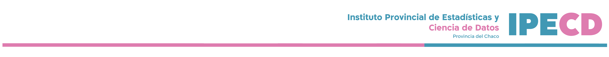
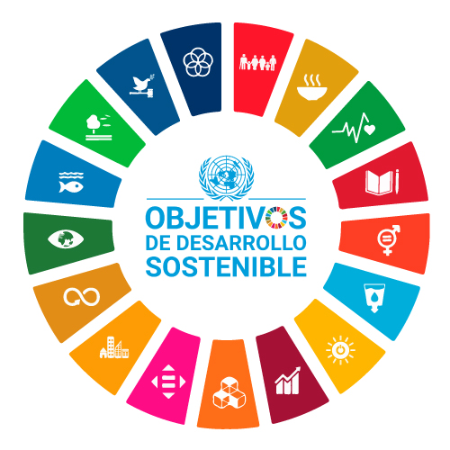

Avances sobre ODS en la Provincial del Chaco


Objetivos de Desarrollo Sostenible
La Provincia del Chaco se ha alineado en cumplir con la Agenda 2030 para el Desarrollo Sostenible adoptada por la Asamblea General de la Naciones Unidas el 25 de septiembre de 2015, dando seguimiento a sus 17 Objetivos y 169 metas.
Reconociendo responsabilidades de distinto nivel, así como realidades diferentes entre los países que los suscriben, los ODS conforman una agenda común de promoción del desarrollo sostenible, apoyada en el convencimiento de que las iniciativas para acabar con la pobreza deben ir de la mano de estrategias que favorezcan el crecimiento económico y abordan una serie de necesidades sociales, como la educación, la salud, la protección social y las oportunidades de empleo, al tiempo que luchan contra el cambio climático y fortalecen las políticas de protección del ambiente.
Ahora que el mundo atraviesa el tercer año de la crisis de la enfermedad por coronavirus (COVID-19), se hace evidente que, tras años de progresos, se ha detenido o incluso invertido el desarrollo en varios ámbitos. Si bien el mundo estaba lejos de alcanzar los Objetivos de Desarrollo Sostenible (ODS) incluso antes de 2020, la pandemia ha agravado esa tendencia, cobrando un precio devastador en la vida y los medios de subsistencia de las personas y en las iniciativas mundiales para alcanzar los ODS. En contra de las primeras previsiones, la pandemia de la COVID-19 mantuvo la economía mundial bajo su control hasta bien entrado el año 2021, lo que agravó aún más una situación ya alarmante en términos de hambre e inseguridad alimentaria, e hizo más difícil la recopilación de datos y las evaluaciones estadísticas.
Este informe busca servir como guía de seguimiento para dar cumplimiento a la Agenda 2030 y los 17 Objetivos de Desarrollo Sostenible (ODS) a los que se alineó la Provincia del Chaco en el 2022. El proceso de generación de indicadores para permitir dar seguimiento a los 17 objetivos no está completo, por lo que esta presentación se encuentra sujeta a cambios, se espera contar con una gama amplia de indicadores para el año 2023. Se presentan un panorama de los objetivos a nivel global en base a informes de la ONU y la FAO, para luego mostrar el estado del objetivo en la provincia.